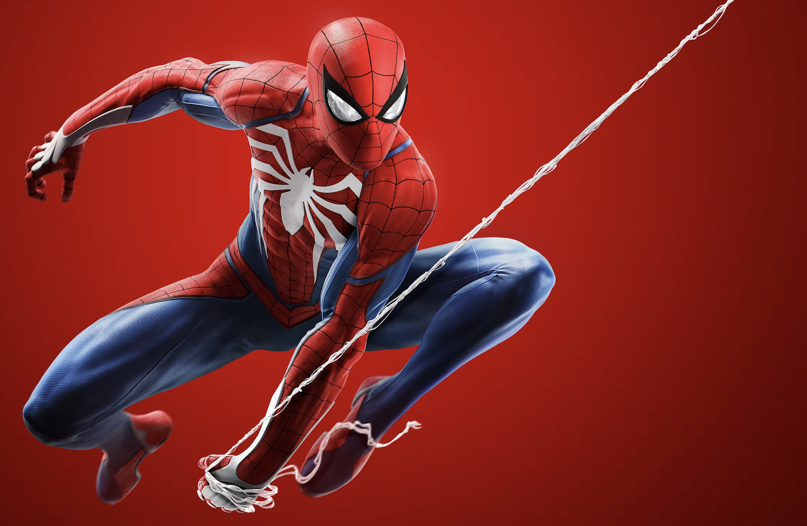

Comedy vs Action vs Drama: A Truly Cinematic Battle
Why Comedy Is The Greatest
When you’re watching a movie, you’re there to relax and have fun for one
reason or another. Some people get their enjoyment from being scared, or
from intense sequences, but everybody can find enjoyment in laughter and
just having a good time. Action and drama are very intense genres of
movies, which while they may have a time and place, they aren’t as usable
options or as widely available to the viewer as a comedy movie might be,
whereas with comedy, everyone can always use a laugh. Also, comedy is
something nearly everybody will enjoy with friends or family, while
something like action or drama asks for a more particular taste that
not everybody will have. Comedy can furthermore help lift spirits and
weaken the bad things going on by giving an opportunity to just be in the
moment and laugh, and as the saying goes, laughter is the best medicine.

Why Action is #1
When someone goes to the movies they end up seeing a larger ratio of action movies compared to any other. That is because movie directors understand that their target audience eats it up. Many action movies can be for any target group, such as kids, adults, or elderly. By example: Spider-man is a favourite to many children around the world. Then there’s even movies for a man’s wife that might’ve preferred to watch a rom-com, such as Fallout. Action involves some teamwork with other genres such as comedy, drama, and even romance. Action movies are the pinnacle of anticipation, excitement and adrenaline. When watching in 3D it even feels like you’re experiencing the movie as if you are a character in it. It becomes so enticing that you get caught up in the movie and the whole experience. Although Comedy and Drama can be great genres to watch, they don't give off as much of an adrenaline rush of happiness while watching. Comedy is great for a laugh and drama makes you think about your own self. But to escape from that, Action is the way to go.
